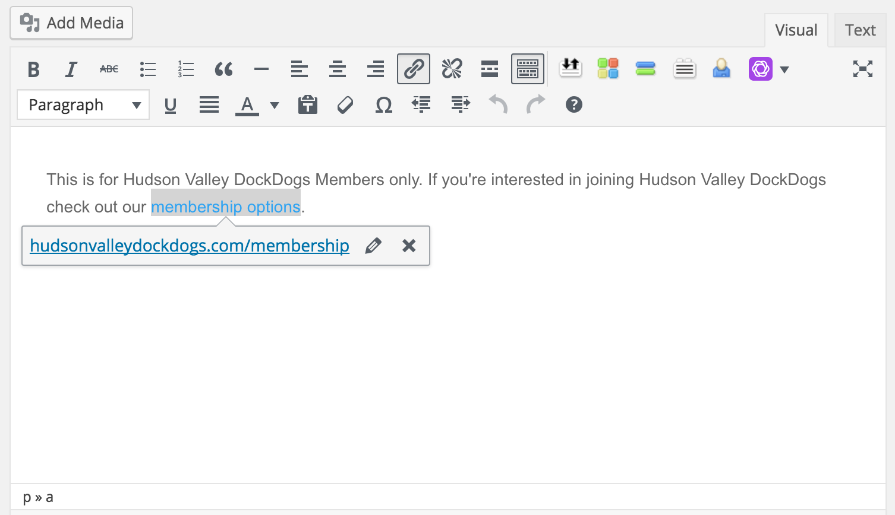

WordPress Basics#
This page will walk you through some of the basic formatting functions the administrator of the Hudson Valley DockDogs website will need to perform.
Signing Into WordPress#
To administer content on the Hudson Valley DockDogs Website you will need to login to the WordPress Admin console.
- Visit https://hudsonvalleydockdogs.com/wp-login.php
- Enter your username
- Enter your password
- Login
Uploading Media#
Uploading new media to WordPress such as photos for use in posts, pages, and galleries can easily be completed via your WordPress Admin console.
- Login to WordPress Admin
- Click on MEDIA
- Click ADD NEW
- Navigate to the location on your computer where the photos are located and select them.
- Wait for your images to upload.
Note
Please note that images may take a while to upload as they are optimized via compressing the image as well as resizing to ensure they can be used in the various locations throughout the website.
Adding a Link#
If you wish to add a link to another page/post inside of the Hudson Valley DockDogs website or to another website you can do so via the WYSIWYG editor built into WordPress. (Note: WYSIWYG stands for WHAT YOU SEE IS WHAT YOU GET)
- Highlight the text you wish to have the link added to from the page/post you’re working on from the WordPress Admin Console.
- Click on the link icon
- Paste in the website address you want the link to go to.

Adding Style to Format Text#
- You can BOLD and ITALICIZE or underline text in a format very much like you would using Microsoft Word while working inside of WordPress.
Note
If you prefer keyboard shortcuts you can highlight the text you’d like to apply basic styling to and use keyboard shortcuts. For example: Ctrl (Windows) or CMD (Mac OS) + B will apply bold formatting to highlighted text.